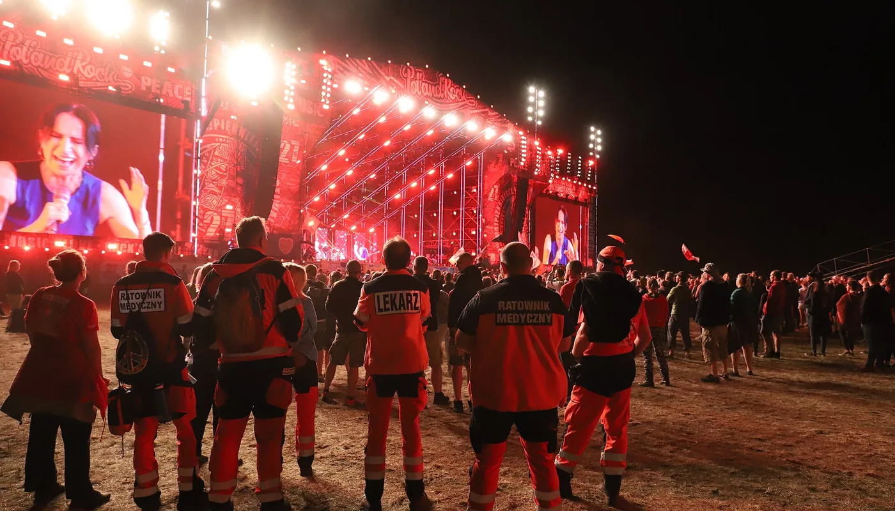

Zabezpieczenie medyczne imprez — od pikniku po imprezę masową
Patrole ratownicze, zespoły wyjazdowe i punkt pomocy medycznej. Przy imprezie masowej skład obsady nie jest kwestią uznania organizatora — wynika z rozporządzenia. Policz go sam, zanim ktokolwiek wystawi Ci ofertę.

Ile ratowników wymaga Twoja impreza
Wpisz rodzaj imprezy, liczbę uczestników i datę. Dostaniesz skład wymagany rozporządzeniem oraz informację, ile zostało do ustawowego terminu złożenia wniosku.
Sprawdzimy, ile zostało do terminu złożenia wniosku.
Uzupełnij dane
Progi z rozporządzenia Ministra Zdrowia z 6 lutego 2012 r. (Dz.U. 2012 poz. 181). To wyliczenie z przepisu, nie oferta.
Zamów tę obsadęKiedy impreza jest imprezą masową
Od tego zależy wszystko dalsze: obowiązek zezwolenia, skład obsady medycznej i termin, w którym trzeba złożyć wniosek. Progi ustawowe:
- Impreza artystyczno-rozrywkowa — od 1 000 osób na terenie otwartym, od 500 w obiekcie.
- Impreza sportowa — od 1 000 osób na terenie otwartym, od 300 w obiekcie.
- Mecz piłki nożnej — od 1 000 osób, niezależnie od miejsca.
Liczy się liczba udostępnionych miejsc, a nie liczba sprzedanych biletów — to najczęstsza pomyłka organizatorów. Jeżeli wygrodzony teren mieści dwa tysiące osób, a sprzedaliście osiemset biletów, impreza i tak jest masowa.
Co znaczą P, S i patrol ratowniczy
Trzy pojęcia, które zobaczysz w wyniku kalkulatora i w ofercie:
- Patrol ratowniczy — dwóch ratowników pieszo, z torbą R1, defibrylatorem i noszami. Porusza się po terenie i dociera tam, gdzie nie wjedzie samochód.
- Zespół wyjazdowy podstawowy (P) — ambulans z obsadą ratowniczą. Zabezpiecza transport poszkodowanego do szpitala.
- Zespół wyjazdowy specjalistyczny (S) — ambulans z lekarzem w składzie. Wymagany przy większych imprezach.
- Punkt pomocy medycznej — stałe miejsce z zapleczem, gdzie można położyć poszkodowanego i przyjąć kilka osób naraz.
- Koordynator medyczny — jedna osoba odpowiedzialna za łączność między patrolami, zespołami i służbami. Obowiązkowa przy imprezach powyżej 10 000 uczestników.
Imprezy niemasowe, zakłady pracy, zawody
Wesele, piknik firmowy, zawody strażackie, zlot, dzień otwarty, bieg na kilkaset osób — rozporządzenie o imprezach masowych ich nie dotyczy. Nie znaczy to, że zabezpieczenie jest zbędne: żąda go zwykle właściciel terenu, ubezpieczyciel albo sponsor, a przy zawodach sportowych regulamin związku.
Przy takich wydarzeniach obsadę dobieramy do ryzyka, nie do tabeli. Patrzymy na:
- rodzaj atrakcji — dmuchańce, sporty kontaktowe, wspinaczka, woda, ogień
- wiek uczestników — dzieci i seniorzy zmieniają profil zdarzeń
- dostęp dla karetki i czas dojazdu najbliższego zespołu ratownictwa
- pogodę i porę roku — upał na biegu to inne zdarzenia niż mróz na jarmarku
- sprzedaż alkoholu
Zabezpieczamy też prace szczególnie niebezpieczne w zakładach: postoje techniczne, prace na wysokości, w przestrzeniach zamkniętych, przy zbiornikach.
Dokumenty, które dostajesz do wniosku
Wniosek o zezwolenie na przeprowadzenie imprezy masowej składa się najpóźniej na 30 dni przed planowanym terminem, a informacja o sposobie zapewnienia pomocy medycznej jest jego częścią.
Od nas dostajesz komplet załączników:
- opis sposobu zapewnienia pomocy medycznej ze składem obsady i rozmieszczeniem na terenie
- kopie zaświadczeń i uprawnień ratowników
- polisę OC
- wykaz sprzętu medycznego, który będzie na miejscu
- dane koordynatora medycznego, jeżeli jest wymagany
Praktycznie oznacza to, że umowę z nami trzeba mieć wcześniej niż miesiąc przed imprezą. Wpisz datę w kalkulatorze powyżej, a pokażemy, ile zostało czasu.
Ile kosztuje zabezpieczenie
Rozliczamy się za godzinę pracy zespołu, z minimalnym czasem rozliczeniowym i doliczonym dojazdem. Poniżej widełki, z których wychodzimy przy wycenie.
Od czego zależy cena
- Skład obsady — wynika z kalkulatora i nie podlega negocjacji przy imprezie masowej.
- Liczba godzin — liczymy od wejścia zespołu na teren do opuszczenia go po imprezie, nie od pierwszego zgłoszenia.
- Teren — plener z jednym wjazdem wymaga innego rozstawienia niż hala.
- Profil uczestników i atrakcje — sporty kontaktowe, woda, alkohol podnoszą ryzyko i obsadę.
- Termin i dojazd — weekendy, święta i wyjazdy poza nasz stały teren są droższe.
Co dostajesz po imprezie
Organizator odpowiada za bezpieczeństwo także wtedy, gdy nic się nie wydarzyło — i musi to udokumentować. Po zakończeniu przekazujemy:
- wykaz interwencji z godzinami i miejscem zdarzenia
- karty udzielonej pomocy dla każdej osoby, którą przyjęliśmy
- raport końcowy do dokumentacji imprezy
- informację o zdarzeniach, które warto uwzględnić przy kolejnej edycji